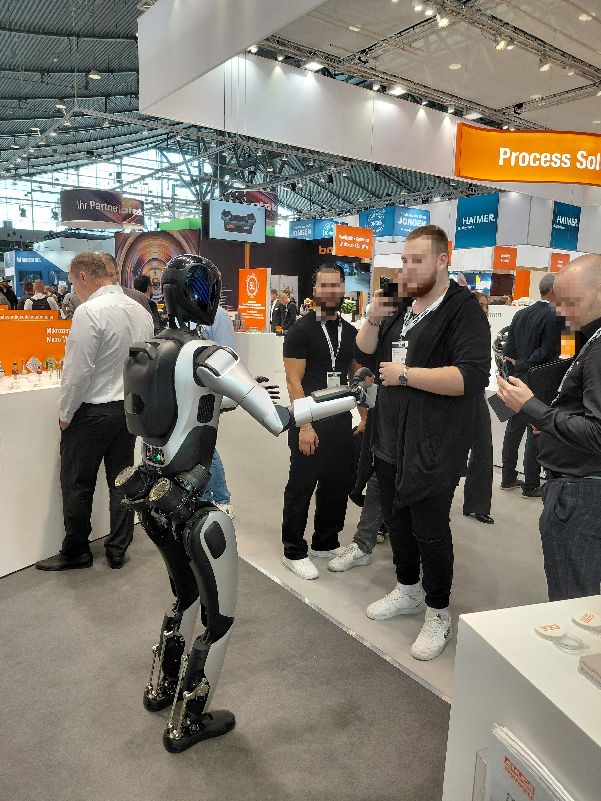
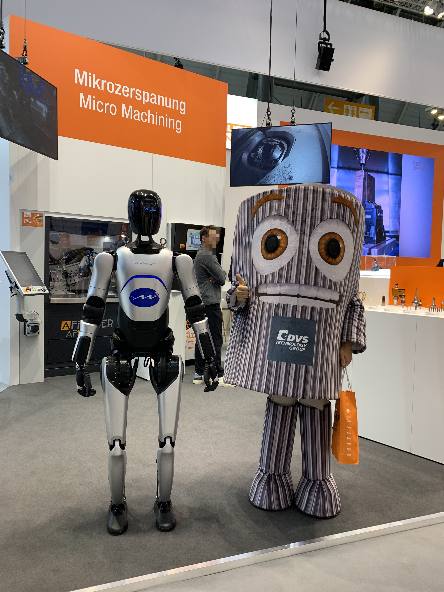
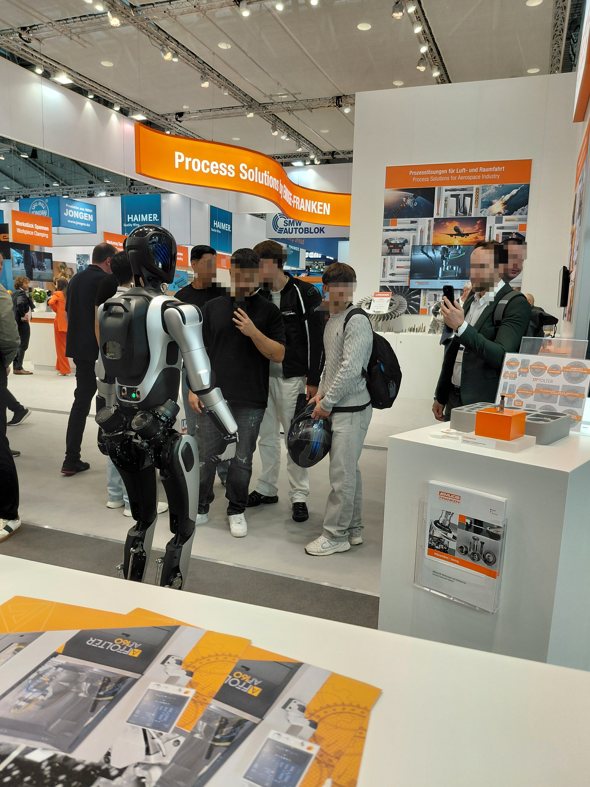

MINTH Group · Industry / Robotics
Embodied Robotics Integration & Deployment
Deploy, demonstrate, and maintain embodied robots.
Hands-on work with commercial embodied robots across exhibition support, showroom operations, customer demonstrations, hardware repair, and software updates.
01 / Field Assignment
On-site Technical Support
AMB · Messe Stuttgart, Germany
14–19 September 2026
Robot deployment and live exhibition support.
Provided on-site technical support for embodied robot demonstrations at AMB in Stuttgart, helping bring customer-specific presentations to life on the exhibition floor.
The assignment covered robot installation, commissioning, transport logistics, and day-to-day operation. Customized spoken presentations introduced the customer's products, while multilingual interaction helped the robot engage with international visitors.
Operated the robot as it moved between exhibition booths, delivered product introductions, performed dance demonstrations, and interacted with guests throughout the event.
- Deployment
- Robot transport, installation, setup, and commissioning on site.
- Customization
- Customer-specific speech content and product presentation demonstrations.
- Interaction
- Multilingual support for conversations and engagement with exhibition visitors.
- Operation
- Controlled movement between booths, product introductions, dancing, and guest interaction.
AMB Stuttgart / Field Gallery
Robotics on the exhibition floor.
Three photographs from the on-site assignment, showing robot demonstrations and visitor engagement.






02 / Showroom
Showroom Operations & Demonstrations
Maintain showroom robots and present live demonstrations to visiting customers.
This work covers showroom robot upkeep, demo preparation, and presenting robot capabilities during customer visits.
Detailed examples and photographs will be added.
03 / Robot Service
Robot Maintenance & Repair
Support robot operation through hardware repair, component replacement, and software updates.
This work includes repairing robot hardware, replacing parts, and updating robot software.
Detailed examples and photographs will be added.